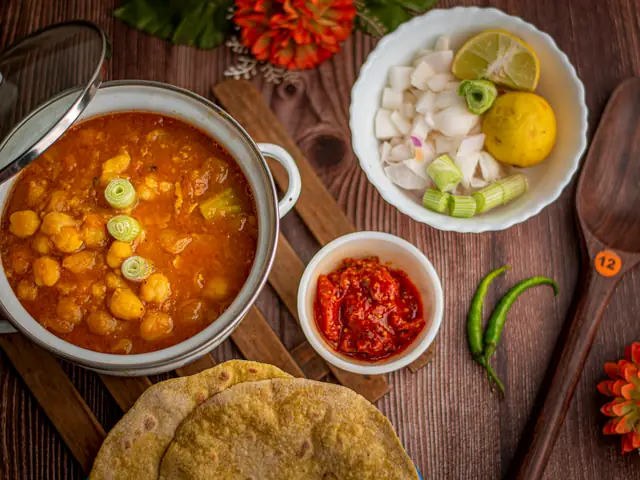
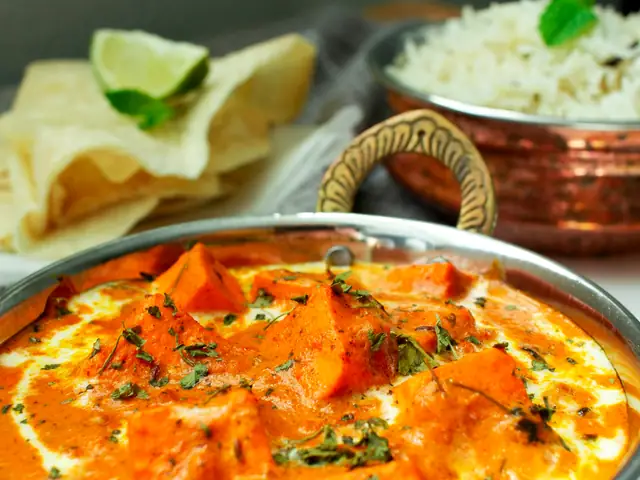
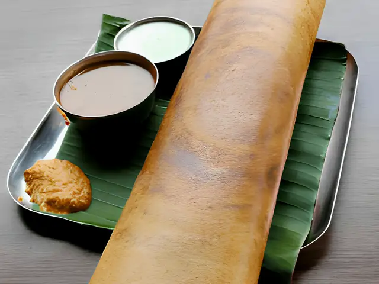
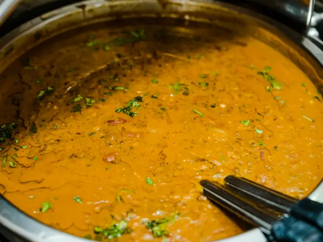
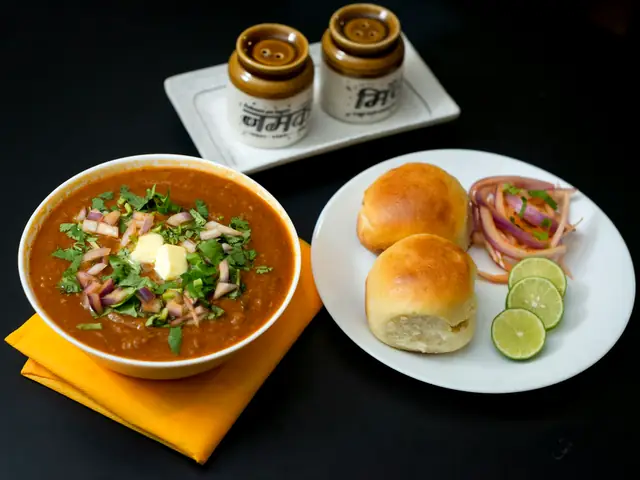
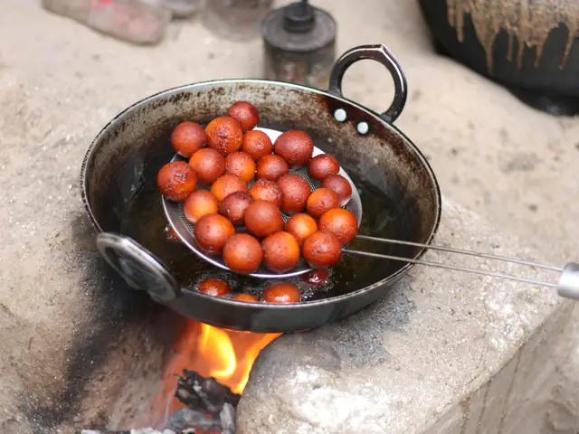
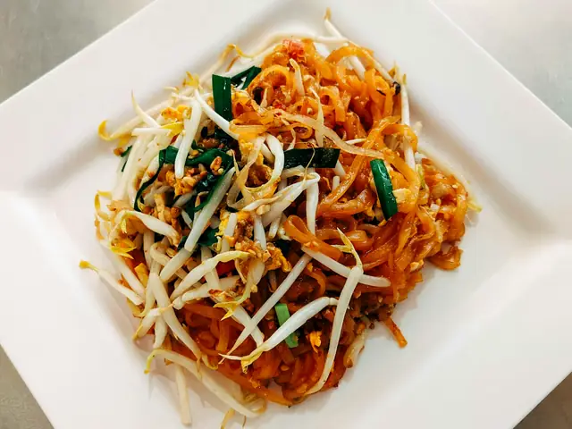
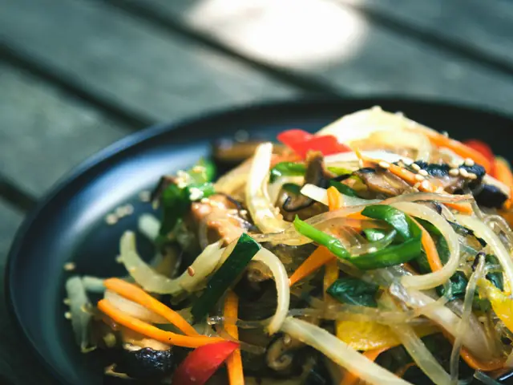
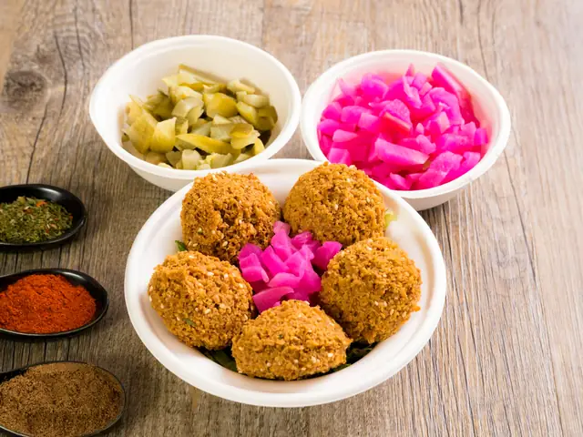

12 recipes
Asia
Saffron, smoke and street stalls

IndiaAmritsari Chole50 min · Medium
IndiaPaneer Butter Masala35 min · Medium
IndiaMasala Dosa40 min · Hard
IndiaDal Tadka30 min · Easy
IndiaMumbai Pav Bhaji40 min · Easy
IndiaGulab Jamun45 min · Hard
ThailandVegetable Pad Thai25 min · Medium · Vegetarian version
South KoreaJapchae30 min · Medium · Vegetarian version
LebanonFalafel30 min · MediumNepalVeg Momos50 min · Hard · Vegetarian versionJapanAvocado Cucumber Maki45 min · HardChinaVegetable Spring Rolls45 min · Medium